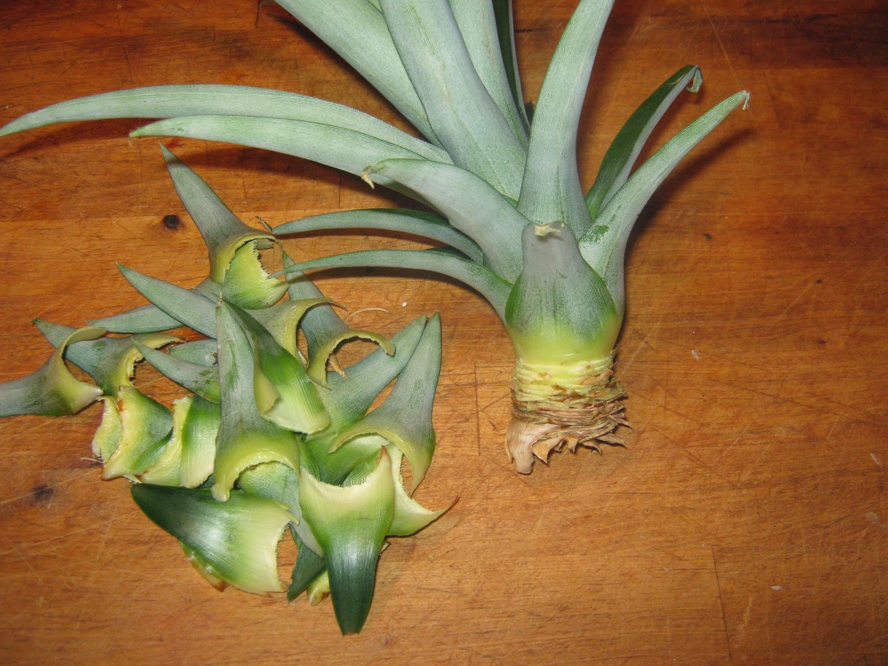

These are materials used to propagate pineapples
- Crowns are born on top of the fruits and are broken off and prepared for planting.
- They are more preferred to suckers because they give uniform growth and take two years to reach maturity.
- Slips are borne to the base of the pineapple fruits.
- They are cut and prepared for plantings.
- Their growth rate is faster than for crowns giving average uniformity.
- They take 22 months from planting to maturity.
- Crowns and slips are planted in the nurseries first before transplanting to the main seed bed.
